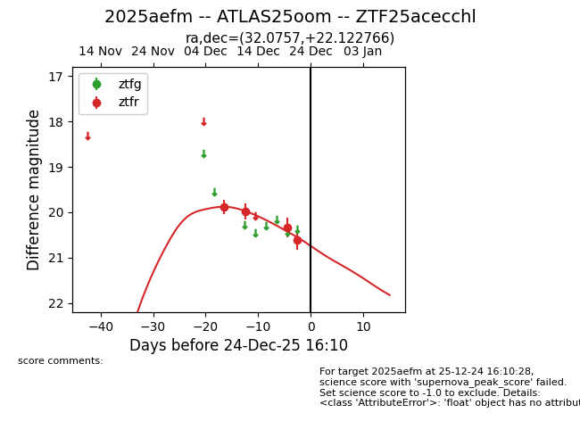
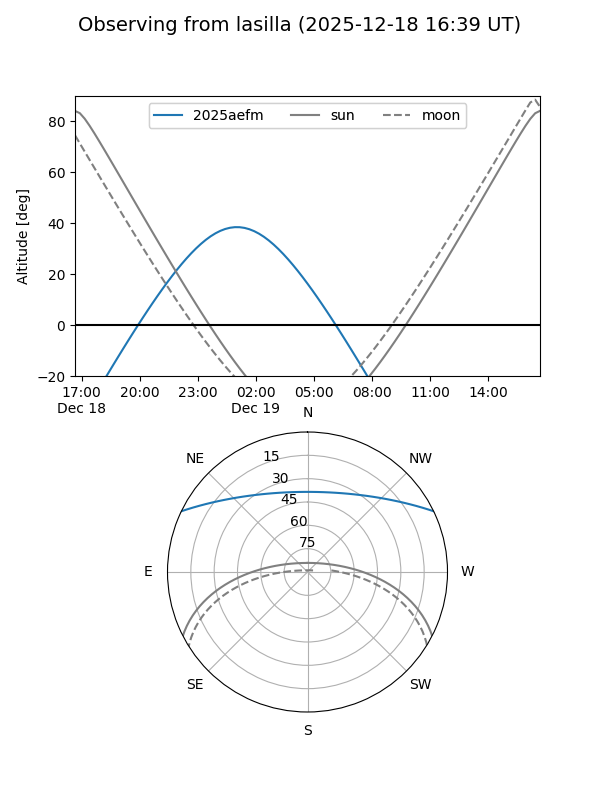
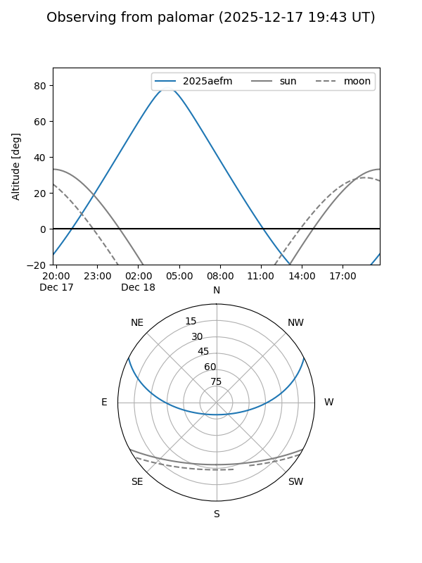
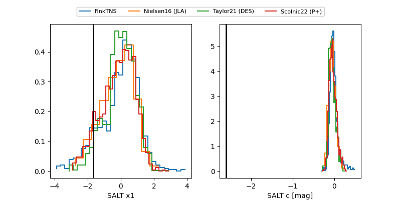

2025aefm
Target 2025aefm at 2025-12-20 04:04
Aliases and brokers:
FINK: fink-portal.org/ZTF25acecchl
Lasair: lasair-ztf.lsst.ac.uk/objects/ZTF25acecchl
ALeRCE: alerce.online/object/ZTF25acecchl
TNS: wis-tns.org/object/2025aefm
YSE: ziggy.ucolick.org/yse/transient_detail/2025aefm
alt names
ZTF25acecchl (ztf,fink_ztf)
2025aefm (tns,yse)
ATLAS25oom (atlas)
Coordinates:
equatorial (ra, dec) = 32.0757,+22.12277
equatorial (HMS+DMS) = 02:08:18.18,+22:07:21.96
galactic (l, b) = (145.4888,-37.35917)
Flags:
Photometry:
last ztfr=20.34
3 ztfr detections
Lightcurve

Visibility


Additional plots
